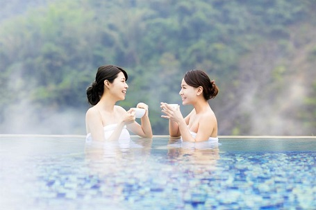
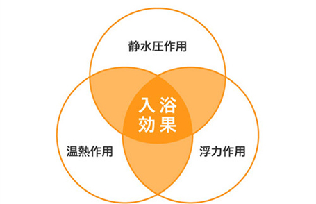

溫泉的功效

溫泉有「神水」、「神泉」之美譽， 除可促進血液循環， 又有去病、療養、復健和美容的效果； 時值寒冬，更是享受泡湯之樂的季節， 煙氣蒸騰下，專家帶您走一趟溫泉健康之行， 透視溫泉的療效與健康認知
泡湯好處多

溫泉是指地下水在一定的地質條件下，受地球內部熱能影響，形成有溫度的地下熱水，當它從地層湧出，就稱為溫泉。 由於溫泉對人體健康具有下列特性，因此被視為保健與醫療的珍品。
- 溫熱作用：溫度能刺激皮膚末梢神經，進而傳達至中樞神經，加強全身各系統機能；並且溫熱可影響身體的新陳代謝、血液循環和肌肉活動力。對風濕病、關節炎及肌肉疼痛患者來說，溫泉的溫熱作用更是具有療效。
- 水壓力作用：在水中承受的壓力有助於呼吸系統的改善，如浸泡溫泉對氣喘、肺氣腫等就有良好的影響。
- 水浮力作用：水中的浮力使身體變輕，適用於復健治療。
- 鬆弛作用：溫泉浴能使身心鬆弛，達到輕鬆舒適，尤其是溫泉大多位於風景區及旅館渡假休閑區，因此放鬆效果更強。
- 化學作用：溫泉中的化學物質能通過皮膚進入人體起作用，例如硫磺泉具解毒作用。
- 調節作用：溫泉能使人體各項機能正常化，例如溫泉能使高血壓患者血管擴張，降低血壓，也能使低血壓者血壓上升；而一般人則維持在正常範圍，原因就在其具有調節作用。
泡湯步驟一把罩

泡湯這項活動源自於日本，日本人對於泡湯的步驟是想當的講究。從入浴前的前置動作，一直到泡完湯的後續行為都有一定的步驟。經過多年的演進，成為現在我們遵循的泡湯技巧。
1.泡湯前先喝一杯開水補充水份：
入浴後流汗是一定的，但在泡湯及三溫暖的過程中流失的水分更多。為了避免泡湯後水分流失過多，泡湯/入浴前15分鐘前先喝一杯開水，當然茶也可以但寶礦力等含有鹽份的運動飲料就更沒話說了。
*有帶小朋友的也一樣，切忘讓小鬼補充水份。除此之外大家應該清楚小朋友要憋尿不簡單，請在泡湯前讓他們先上廁所哦。
2.泡湯前充分的溫熱身體：泡湯前溫熱身體有兩種說法
第一種說法是讓身體習慣溫泉成分以及避免讓高溫導致血壓急速上昇 第一種說法則是日本人所謂的禮貌，先將身體污垢去除勿帶入浴池 方法：大約用洗面器沖洗身體約10次
3.將毛巾放在頭上

基本(禮貌)上是不能將自己的毛巾帶進大眾浴池裡之外，由於水壓會導致血液上衝到腦部，將毛巾放在頭上聽說能避免血壓上昇。
4.先從半身浴開始：

通常我們都沒有發現, 但當在泡湯時如果浸泡到脖子部分，身體所受的水壓約500公斤。除了對心臟的負擔大以外血液容易集中在腦部，為了讓身體習慣水壓應於先從半身浴慢慢讓身體習慣。
*有帶小朋友的也一樣，切忘讓小朋友補充水份。除此之外大家應該清楚小朋友要憋尿不簡單，請在泡湯前讓他們先上廁所哦。
5.一次的泡湯時間不宜過長, 分次入浴：

比如說泡湯10分鐘, 一次泡10分鐘和分三次泡哪一個方法較好呢？ 答案是分開泡。這樣對身體的負擔較少之外，大家知道嗎？這溫泉標示 ♨️ 上的三根煙是意思是為了減少身體的負擔一次的泡湯時間不宜太長，請分三次：5分/7分/3分
6.恢復疲勞冷熱交替泡湯/入浴法：
先進入熱水浴充分暖身後在入冷水浴降低體溫，這方式稱為冷熱交替入浴法。 只要做這入浴法能將血管擴大促進新陳代謝。冷熱入浴法重複兩到三次效果會更好，不妨在累的時候試試看呢？
7.泡湯後請提早補充水份:

日本人在洗完澡後的第一杯不是啤酒而是牛奶。當然不一定要喝牛奶茶水也一樣可以。主要是補充泡澡中等被流失的水份。
補充：為什麼日本人喜歡在泡澡後喝牛奶呢。聽說在昭和３０年代冰箱還未在一般家庭普及時，剛好公眾澡堂有最新的冰箱，賣牛奶的看到商機請澡堂擺放牛奶而開始。另外牛奶能攝取鈣質／維他命Ｂ２等良質蛋白質避免骨質疏鬆並加強免疫力及穩定精神作用，泡湯後等喝一杯也能得到安眠效果。
 333桃園市龜山區德明路5號
333桃園市龜山區德明路5號 TEL:(03)1234-5678
TEL:(03)1234-5678 EMAIL:123456789@gmail.com
EMAIL:123456789@gmail.com